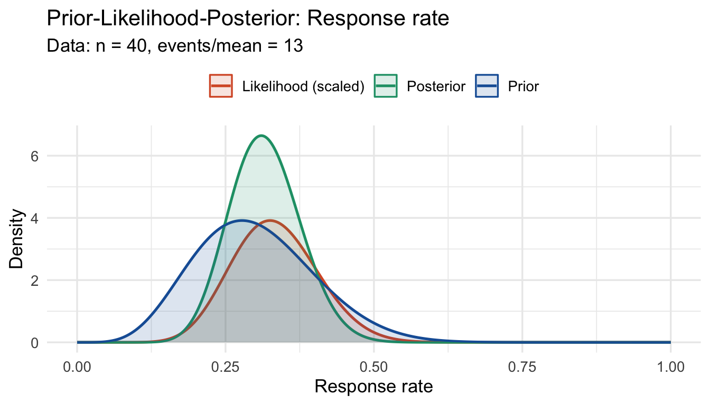
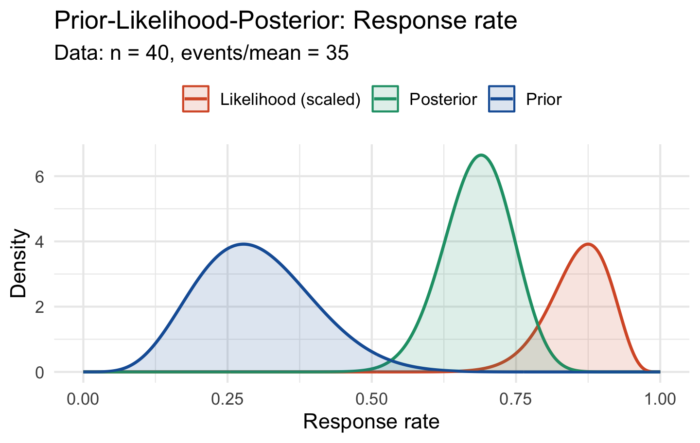

prior <- elicit_beta(
mean = 0.30,
sd = 0.10,
method = "moments",
label = "Response rate"
)Prior-Data Conflict Diagnostics
Why Conflict Diagnostics Matter
Before updating a prior with trial data it is essential to check whether the two are compatible. Substantial prior-data conflict indicates one of three things: the prior was mis-specified, the data are anomalous, or the model is wrong. Regulators increasingly require evidence that conflict was assessed and addressed.
bayprior provides four complementary univariate diagnostics and one multivariate diagnostic, following Box (1980) and related work.
Univariate Conflict: prior_conflict()
Setting Up
No-Conflict Case
When prior and data are compatible:
cd_none <- prior_conflict(
prior = prior,
data_summary = list(type = "binary", x = 13, n = 40),
alpha = 0.05
)
print(cd_none)Mild Conflict Case
When the observed data is somewhat surprising given the prior:
cd_mild <- prior_conflict(
prior = prior,
data_summary = list(type = "binary", x = 20, n = 40),
alpha = 0.05
)
print(cd_mild)Severe Conflict Case
When prior and data are strongly incompatible:
cd_severe <- prior_conflict(
prior = prior,
data_summary = list(type = "binary", x = 35, n = 40),
alpha = 0.05
)
print(cd_severe)The Four Diagnostics Explained
1. Box’s Prior Predictive P-value
Proposed by Box (1980). Tests whether the observed data \(y\) is plausible under the prior predictive distribution \(p(y) = \int p(y|\theta) \pi(\theta) d\theta\):
\[p_{\text{Box}} = P(|T(Y)| \geq |T(y_{\text{obs}})|)\]
where \(T\) is a discrepancy measure. bayprior uses a Normal approximation:
\[z = \frac{\hat{\theta} - \mu_\pi}{\sqrt{\sigma_\pi^2 + \text{SE}^2}}, \quad p_{\text{Box}} = 2\Phi(-|z|)\]
Interpretation: \(p < 0.05\) flags conflict at the 5% level.
2. Surprise Index
The standardised distance between the prior mean and the observed data:
\[S = \left|\frac{\hat{\theta} - \mu_\pi}{\sqrt{\sigma_\pi^2 + \text{SE}^2}}\right|\]
Interpretation: \(S > 2\) is moderate surprise; \(S > 3\) is high surprise (equivalent to a 3-sigma departure).
3. KL Divergence
The Kullback-Leibler divergence from the prior to the (normalised) likelihood, approximated under normality:
\[\text{KL}(P \| Q) = \log\frac{\sigma_Q}{\sigma_P} + \frac{\sigma_P^2 + (\mu_P - \mu_Q)^2}{2\sigma_Q^2} - \frac{1}{2}\]
Interpretation: Values > 1 indicate large information distance.
4. Bhattacharyya Overlap Coefficient
Quantifies distributional overlap between prior and likelihood:
\[\text{BC} = \exp\!\left(-\frac{1}{4}\log\frac{\sigma_P^2/\sigma_Q^2 + \sigma_Q^2/\sigma_P^2 + 2}{4} - \frac{(\mu_P - \mu_Q)^2}{4(\sigma_P^2 + \sigma_Q^2)}\right)\]
Interpretation: 1 = identical distributions; 0 = no overlap. Values < 0.3 are concerning.
Summary of Thresholds
library(knitr)
kable(data.frame(
Diagnostic = c("Box p-value", "Surprise index",
"KL divergence", "Bhattacharyya overlap"),
`No conflict` = c(">= 0.05", "< 2", "< 0.5", "> 0.6"),
`Mild conflict` = c("0.01 - 0.05", "2 - 3", "0.5 - 1", "0.3 - 0.6"),
`Severe conflict`= c("< 0.01", "> 3", "> 1", "< 0.3"),
check.names = FALSE
), align = "lrrr")| Diagnostic | No conflict | Mild conflict | Severe conflict |
|---|---|---|---|
| Box p-value | >= 0.05 | 0.01 - 0.05 | < 0.01 |
| Surprise index | < 2 | 2 - 3 | > 3 |
| KL divergence | < 0.5 | 0.5 - 1 | > 1 |
| Bhattacharyya overlap | > 0.6 | 0.3 - 0.6 | < 0.3 |
Prior-Likelihood-Posterior Overlay
The canonical visualisation for conflict assessment:
plot_prior_likelihood(
prior,
data_summary = list(type = "binary", x = 13, n = 40),
show_posterior = TRUE
)
plot_prior_likelihood(
prior,
data_summary = list(type = "binary", x = 35, n = 40),
show_posterior = TRUE
)
When conflict is severe, the posterior (green) is pulled far from the prior, and the prior has little influence on the conclusions.
Continuous Endpoint Conflict
prior_conflict() handles continuous outcomes via the type = "continuous" argument:
prior_norm <- elicit_normal(
mean = 0.0,
sd = 0.3,
method = "moments",
label = "Log odds ratio"
)
cd_cont <- prior_conflict(
prior = prior_norm,
data_summary = list(type = "continuous", x = 0.65, sd = 0.25, n = 80),
alpha = 0.05
)
print(cd_cont)Mixture Prior Conflict
Conflict diagnostics work transparently with mixture priors, using the mixture’s fit_summary (mean and SD) for the Normal approximation:
e1 <- elicit_beta(mean = 0.25, sd = 0.08, method = "moments",
expert_id = "E1", label = "Response rate")
e2 <- elicit_beta(mean = 0.40, sd = 0.10, method = "moments",
expert_id = "E2", label = "Response rate")
mix <- aggregate_experts(
priors = list(E1 = e1, E2 = e2),
weights = c(0.5, 0.5)
)
cd_mix <- prior_conflict(
prior = mix,
data_summary = list(type = "binary", x = 28, n = 50)
)
print(cd_mix)Multivariate Conflict: conflict_mahalanobis()
For trials with co-primary endpoints, the univariate diagnostics do not capture the joint distribution. The Mahalanobis distance generalises Box’s approach:
\[D^2 = (\hat{\boldsymbol{\theta}} - \boldsymbol{\mu}_\pi)^T (\boldsymbol{\Sigma}_\pi + \boldsymbol{\Sigma}_{\text{lik}})^{-1} (\hat{\boldsymbol{\theta}} - \boldsymbol{\mu}_\pi) \sim \chi^2_p\]
under compatibility, where \(p\) is the number of endpoints.
mv <- conflict_mahalanobis(
prior_means = c(0.35, 0.60),
prior_cov = matrix(c(0.010, 0.003, 0.003, 0.015), 2, 2),
obs_means = c(0.55, 0.58),
obs_cov = matrix(c(0.008, 0.002, 0.002, 0.010), 2, 2) / 50,
labels = c("Response rate", "OS rate"),
alpha = 0.05
)
print(mv)
#>
#> Marginal z-scores per parameter:
#> Response rate OS rate
#> 1.984 -0.162The marginal_z scores identify which endpoint drives any detected conflict — essential for guiding re-elicitation decisions.
Conflict Severity Classification
bayprior automatically classifies severity and generates a plain-language recommendation:
cat(cd_none$recommendation, "\n\n")
#> No evidence of prior-data conflict (Box p = 0.841). The prior appears consistent with the observed data.
cat(cd_mild$recommendation, "\n\n")
#> No evidence of prior-data conflict (Box p = 0.117). The prior appears consistent with the observed data.
cat(cd_severe$recommendation, "\n")
#> Severe prior-data conflict detected (Box p = 0, surprise = 5.1). Re-elicitation or use of a robust/sceptical prior is strongly recommended.Regulatory Guidance
The FDA Draft Guidance on Bayesian Statistical Methods (2026) requires:
- A pre-specified conflict checking procedure
- Clear documentation of what action will be taken in each severity case
- A sensitivity analysis demonstrating robustness to alternative priors
bayprior’s conflict diagnostics directly support points 1 and 2. See the Sensitivity Analysis vignette for point 3.
References
Box, G. E. P. (1980). Sampling and Bayes’ inference in scientific modelling and robustness. Journal of the Royal Statistical Society A, 143, 383–430.
Spiegelhalter, D. J., Freedman, L. S., & Parmar, M. K. B. (1994). Bayesian approaches to randomized trials. Journal of the Royal Statistical Society A, 157, 357–416.